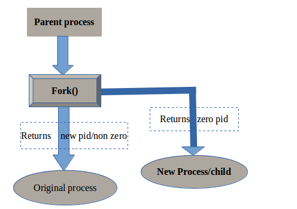

fork() is a system call in Unix. A system call is basically a way to call for services of the operating system. There are a number of system calls in Unix which have predefined responsibilities. Any process that needs system resources as part of their functioning needs to use system calls. Since Operating System is considered the resource manager of the system, we can say that the system call is an interface to call the services provided by the Operating System.
fork() is a system call that is used to create a new process in the system. A process is a live program that is ready to execute on the CPU. A process has its own address space, threads, state, etc. By using fork(), a program in Unix can create an image of itself as another process. fork() is often used with exec(), where exec() is used to replace the currently executing program with a program that is provided as its parameter. When a program calls fork, there can be three types of return values-
fork() is a special method as in it returns two values. This should not be confused to say that fork() has some special C instruction which somehow returns twice. That is simply not true. We know that fork() creates another process in the system. The original process that called fork() needs to continue its execution. The fork() returns one value to the original process that called it. Aka, the parent process. The fork() will return another value to the image of the process that was created. Aka, the child process. Hence, we find people often claiming that fork() returns twice. While the reality is that fork() simply returns two values to two different processes.
Since fork() simply continues with the program execution from the next line, it is the responsibility of the programmer to decide which process should execute which lines in the program. We can do this by simply checking for the return value as previously described. As fork() continues unconditionally by default, a series of fork() calls creates a number of processes equal to the number of nodes on the complete binary tree where the depth of the binary tree is the number of fork() statements.
It is often a good practice to call fork() twice to avoid creating a zombie process. How forking twice helps avoid a zombie process is interesting. Consider that you need to create a process. If you do not wait to collect the status of your child process, well, that is the definition of zombie. The problem with waiting for the child’s process is that it is indefinite when the child process will end. To overcome this problem, the parent process creates a child process, for which the only responsibility is to create a child process. Now the grand-child process does the work which the parent process wanted its child process to do. But now, the parent process can wait for the child process, since the only task of the child process is to create a grandchild process and die. As for the grand-child, its parent has already died and the robust mechanism of Unix makes sure the Init (the process with PID 1) inherits the grand-child process. Thus zombie is avoided.